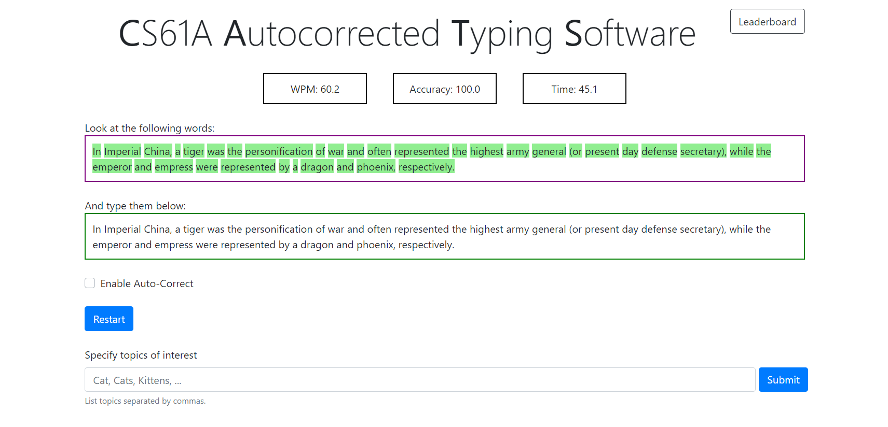
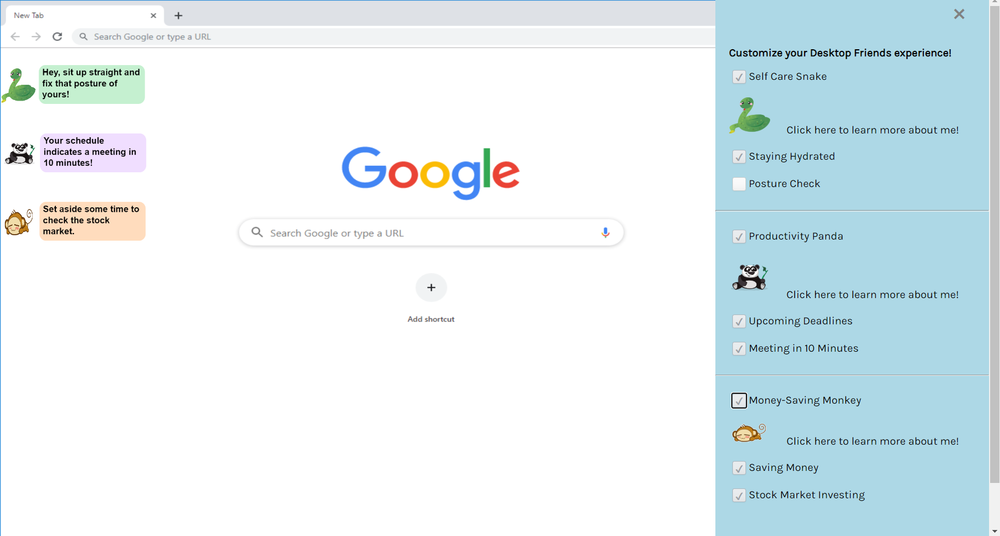
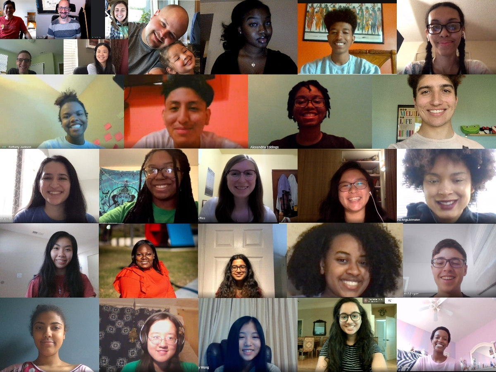
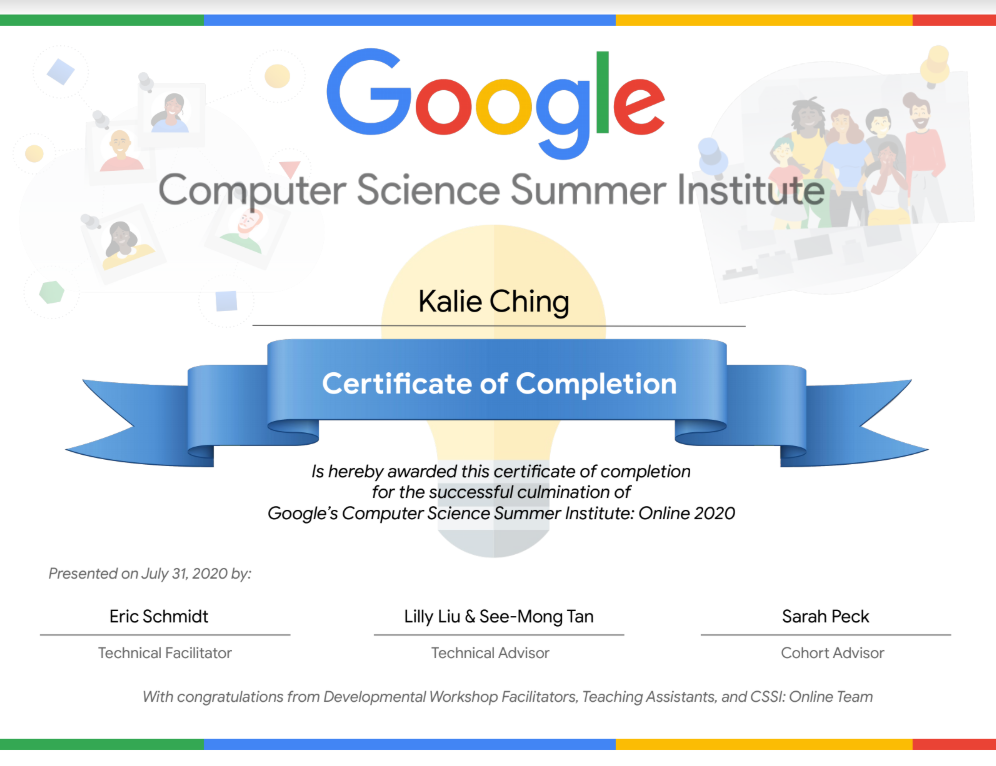
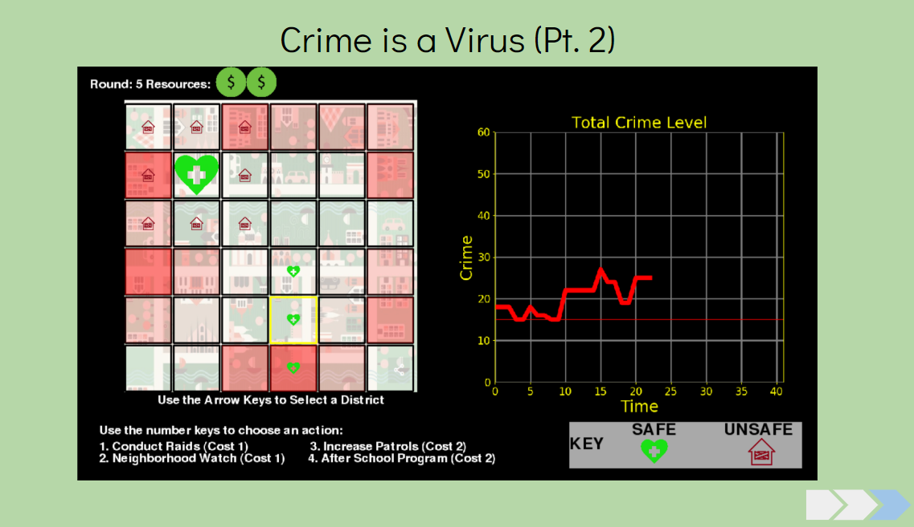
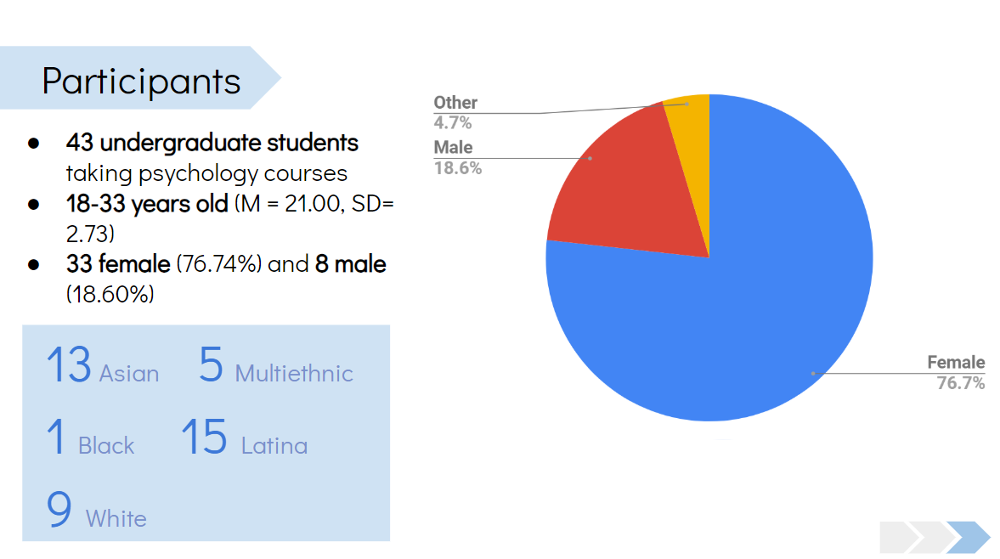
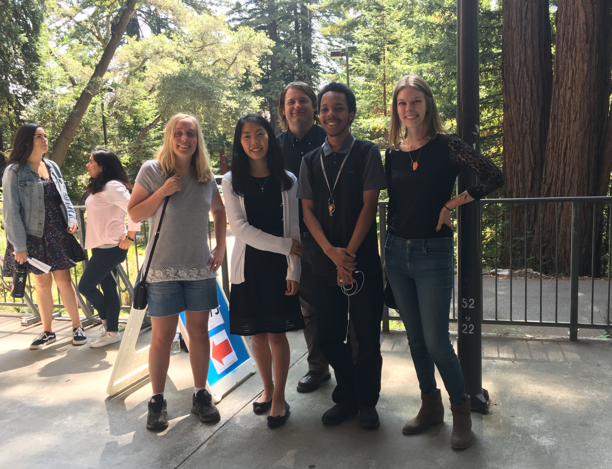
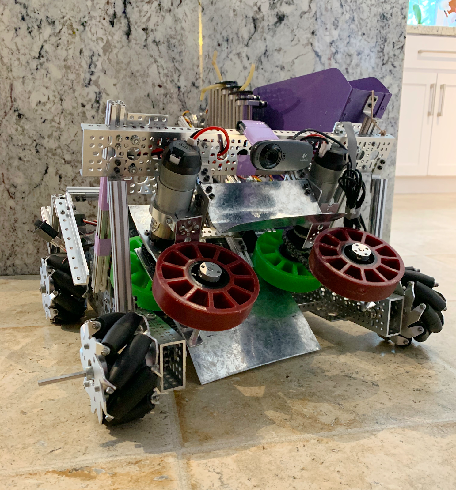

✯ Experience + Projects ✯
Computer Science 61A Projects
CATS
In CATS, which stands for CS 61A Autocorrected Typing Software, my partner and I made a program that
measured typing speed with an autocorrection feature. The CATS GUI was not created as part of the project
and provided by course staff.
ANTS
Ants Project Instructions
SCHEME
For the Scheme project, my partner and I programmed an interpreter with Python for the Scheme programming language.

Google, Inc., Computer Science Summer Institute
Program Participant | Online Program | July 2020
Completed an intensive 4-week project-based JavaScript processing curriculum, taught and mentored
by Google engineers. Configured twelve projects using the p5.js library in small groups of two to three
people. Co-created the final project “Desktop Friends”, an application using the p5.js library,
JavaScript, HTML, and CSS that sends personalized self-care, productivity, and finance management
reminders to the user with friendly animal graphics.
Individual CSSI Mini Coding Projects
Painting App
• Match Circles
• Rainbow Pixel Painter
• DVD Animation
• Switch (Mouse Movement Exercise)
Group CSSI Mini Coding Projects
Frogger 2.0
• Snake
• Color Swap Bravia Balls
• Art Guessing Game
• Snowman Animation
• Coin Collector


The amazing Googler mentors and students of Cohort 3!

My certificate of completion of CSSI
Cisco Systems, Inc., Digital Network Architecture Spaces Group
High School Intern | San Jose, CA | July 2019
Initiated project on porting an iOS application written in Swift to Android using Java;
application users can request employee assistance, access product information, and navigation
tools based on their location within a facility.
“Sante” Android Application
Mobile App Developer | Santa Clara, CA | February 2019 - Present
Collaborated with partner to develop a mobile app using Java in the back-end and XML in
the front-end. The app includes a text-to-speech feature that informs users of prescription
medication information and medical waste resources. Co-created the Android application and
business plan to increase health accessibility, placed as a Semi-finalist in the international
2018-2019 Technovation Challenge.
Science Internship Program
Research Intern | Santa Cruz, CA | June - August 2018
Researched with graduate students at the Computational Media Lab, Univ. of California,
Santa Cruz. Conducted participant studies and analyzed participant questionnaire responses
to research the effects of metaphorical thinking on people’s reasoning when implemented through
procedural rhetoric.

Demonstration of the tested game with metaphorical thinking

Quantifiable information about the participants of the study

FIRST Tech Challenge Robotics
Co-Captain of 11-member team | Santa Clara, CA | August 2016 - March 2020
Programmed autonomous functions in Java, utilized multithreading techniques and TensorFlow to
identify and locate objects; contributed to the building of the robot’s drivetrain and arm mechanism.
Coordinated team meetings, training workshops for rookie teams, outreach sessions, and helped
design and create the team website.

My FIRST Tech Challenge Team at our Roseville, CA Tournament (Jan 2020)

Our finished robot with many custom-made parts!

Programming autonomous functions for the robot with a teammate
Space-Themed Mini Escape Room
Santa Clara, CA | January 2018 - May 2018
Collaborated in a group of five students to create a scaled down version of an escape room with
a space theme consisting of various puzzles and Arduino-powered functionalities for booth visitors.
Presented project to thousands of Maker Faire attendees with the 49ers STEM Leadership Institute;
booth received Editor’s Choice Ribbon.
COSMOS Program
Robotics and Computer Networking Student | Santa Clara, CA | July - August 2017
Studied robotics and computer networking in the COSMOS program at the Univ. of California, Santa
Cruz, an intensive, university-led summer program for students excelling in the STEM fields.
Programmed a robot in C to react to light gradients, simulating the way E. Coli respond to food levels
in the environment (Lab Notebook: roboticskc.weebly.com).
Motion-Powered Bike Turning Signals
Santa Clara, CA | January 2016 - May 2017
Collaborated with a group of five students to innovate motion-powered bike turning signals
with a Lowrider Dynamo bike generator, buttons for user control, and a 3D printed mounting
mechanism for the LED lights. Presented project to thousands of Maker Faire attendees with the
49ers STEM Leadership Institute.